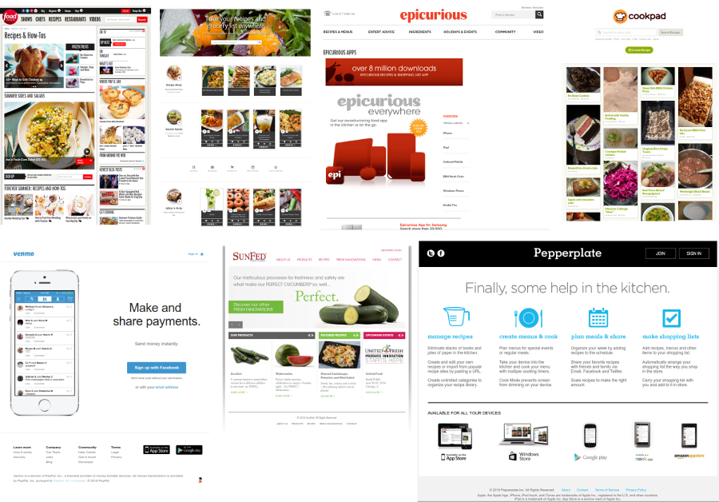
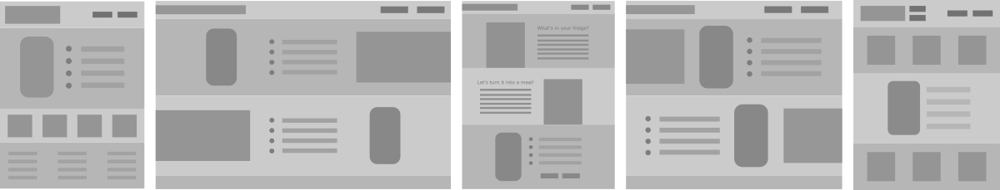
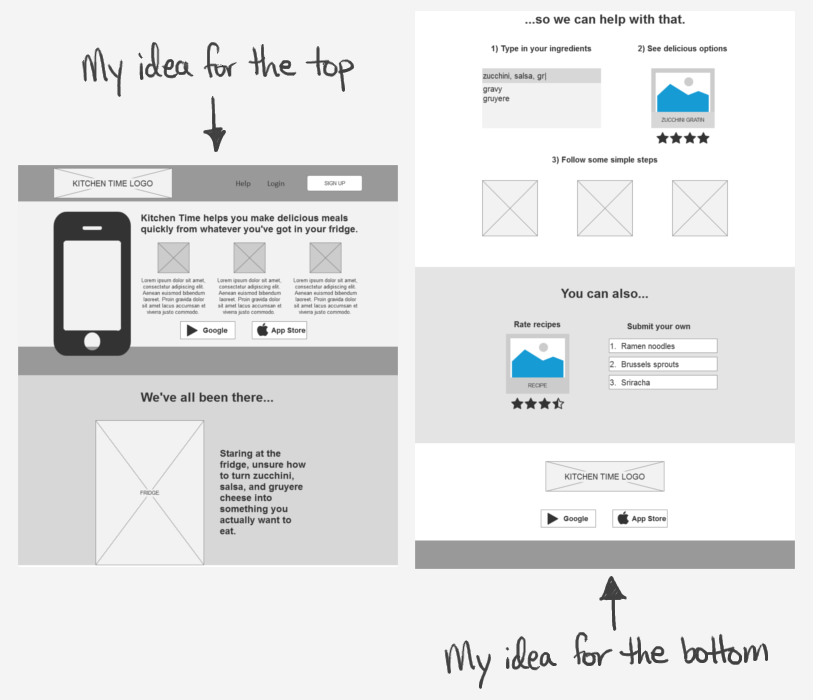
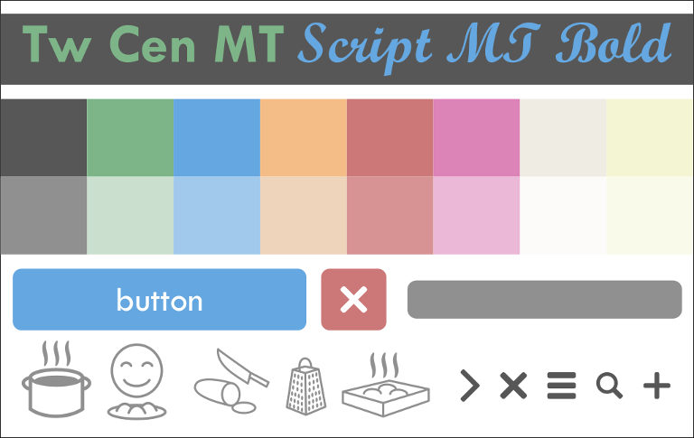
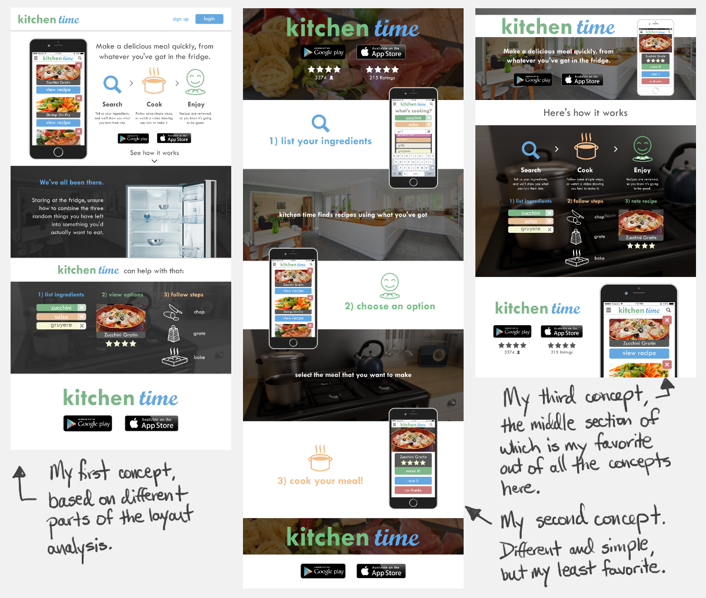
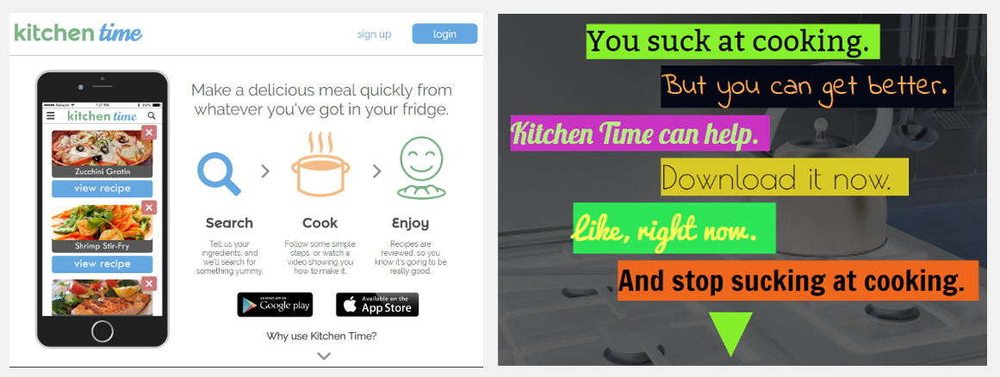
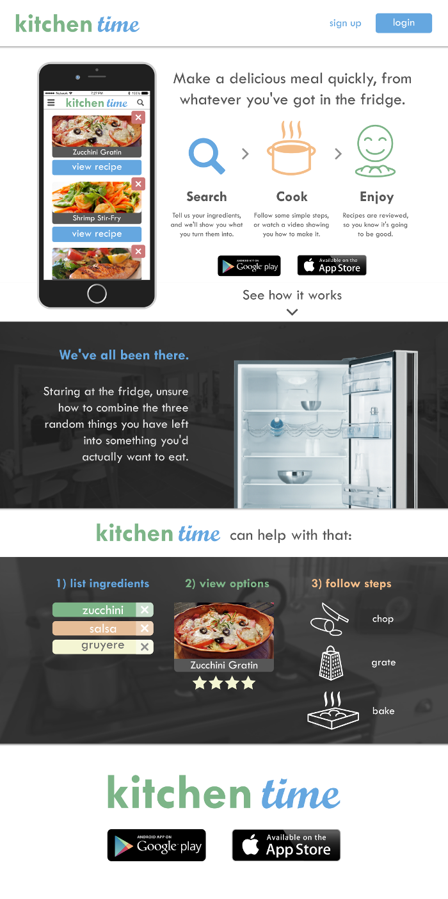

The Project
Overview
I was asked to design a landing page as well as mockup screens for the KitchenTime mobile app. The idea behind the app is that a user can type in whatever ingredients they have on hand, the app will search for recipes using those ingredients, and then provide step-by-step instructions on how to make that recipe.
This project was completed over the course of one week.
Research
Layout Analysis
For inspiration, I took a look at the landing pages for some of KitchenTime’s competitors. I knew I had to describe the functionality of the app clearly and simply, as well as showcase screens from the app itself. I was going for simplicity rather than information overload, so some of my biggest inspiration came from Pepperplate and Venmo, even though Venmo is not a direct competitor.
Wireframing
I used wireframing to help me visualize a number of different layouts, taking inspiration from competitors. I liked the idea of breaking the landing page up into big sections, each one detailing a different aspect of the app, and so I created a number of possible layouts reflecting this design choice.
I settled on a design that showcased the main features the app, as well as the primary call to action, in the first section. I attempted to hook a potential user with a relatable situation in the second section, and then explained the app functionality in more detail as the user moved further down the page in the third.
The bottom of the page has a similar call to action as the top, which gives the user another opportunity to respond.
Visual Design
Syle Tile
I went with pastel colors for the icons and app UI elements. I designed the icons from scratch. Initially, when creating my mockups I used Twentieth Century Monotype and bold Script Monotype. I thought the varied typeface in the logo would be more interesting. However, because neither of those typefaces are free, requiring a license, for the final site I ended up finding Google fonts that resembled them as closely as possible: Montserrat and Norican. 
Page Concepts
I designed three variations of the landing page mockup.
HTML / CSS Site
When it came time to code the page itself, I ended up going with the first concept. In the time I had left, I decided to do something a bit more fun. You can view both landing pages as (not fully) functional sites below. I was only requested to mockup a landing page, so the only working buttons link to the Android and Apple stores.
Click here to view the official KitchenTime landing page.
To view the alternate landing page click here.
You can view the entire official landing page below, as well.
Retrospective
I was happy with the end result overall. However, I think I could have been bolder when it came to my color choices, for both the landing page and app UI elements. I think some of that energy went into making the alternate landing page though, which I didn't design for serious consideration, rather just to do something out of the box.